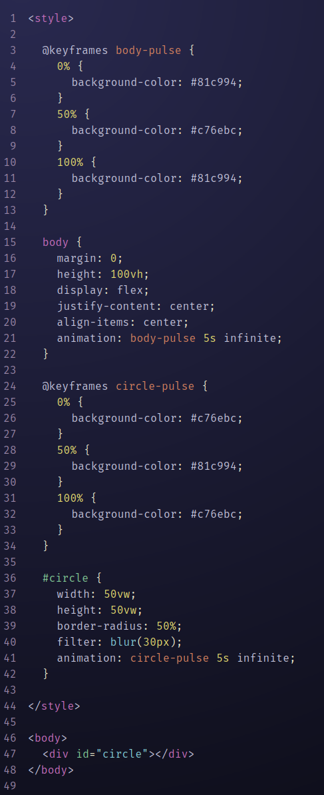

<code>
Complete the first netnet tutorial: What Is Code? (18 mins). Then take some time to practice coding in netnet. Copy the code from the example below into your own netnet sketch.
If you copied the code above successfully you should see something like this:

Once you've done that, take some time to remix this sketch, experiment with the code in the editor and make a few changes to it. When you're finished experimenting "share" your sketch with me by asking netnet for a share link for you to submit on the class canvas assignment.
The World Wide Web
Hypertext + Metamedia + the Internet
In 1945, an American engineer/inventor/thinker named Vannevar Bush wrote an article in the Atlantic entitled, “As We May Think,” where he described a theoretical machine for storing and retrieving information based on associations (which he argued would be more akin to the way we think than the way information was typically organized in catalogs, categories, libraries, etc) he called it the “memex.” This article influenced lots of radically minded engineers and futurists who followed including an experimental writer and filmmaker turned software designer Ted Nelson. Who, in the late 1960s, coined the term “hypertext” and created one of the first applications with linked documents, Xanadu.
Despite hypertext's (and hypermedia's) potential for revolutionizing media, most software designers in the years that followed "imitated the conventional media of the past" as Ted Nelson put it, "paper documents (.doc, .pdf), phonograph record tracks (.mp3s, .wav) and sequential movies (.mov, .mp4), Why?!", that is until a British scientist (and his collaborators Nicola Pellow and Robert Cailliau) created the World Wide Web, a globally distributed and open hypermedia platform built on top of the globally distributed infrastructure of the Internet.
But is today's web living up to it's full hypermedia potential? Or have we regressed back into "imitating the conventional media of the past"? Where do we draw the line between conventional/traditional media and hypermedia? Which characteristics of the media you consume today (Netflix, podcats, TikTok, Twitch, etc) resemble those of hypermedia and which of traditional media?
As you consider these questions:
- Watch Ted Nelson's demo of Xanadu (7mins). What does he mean by "transclusion" and "deep links"? How is his notion of "linking" different from what we have today?
- Then Watch my video on the Browser (15mins), the type of application that brings the Web to life. Then watch my short side video to that on "how/why we do history" (5mins) as artists.
- To learn a little bit more about how the Web works you can watch this PBS digital studio's Crash Course Computer Science episode on "the World Wide Web" (11mins)
- While Ted Nelson was developing his concept of "hypermedia", Adele Goldberg, Alan Kay and others at Xerox PARC were developing their concept of "metamedia" which I mention in my video on the Browser. To learn more about their ideas read their essay "Personal Dynamic Media". Keep in mind this was written in 1977, no one had seen a graphical user interface at the time (because it didn't exist), the relatively few people who had worked with a computer at the time were used to dealing with punch cards and blinking lights.
- Here you'll find the Douglas Adamn's 1990 documentary "Hyperland" (1hr) which I reference about the hypermedia scene at it's peak, just before the explosion of the World Wide Web.